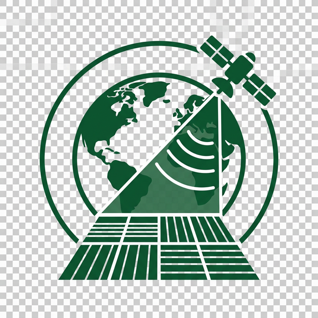

Harness the power of machine learning and Sentinel-2 satellite imagery to accurately classify crop types including Rice, Wheat, Maize, and Cotton. Our system uses Random Forest and AdaBoost classifiers for high-precision agricultural analysis.
Our end-to-end system processes satellite imagery through a sophisticated ML pipeline
Sentinel-2 multispectral satellite imagery or crop dataset input
Drag-and-drop upload interface with image preview and validation
Resize, normalize, and convert to feature vectors using OpenCV
Random Forest and AdaBoost classifiers predict crop type
Visualize predictions with confidence scores and crop information
Advanced crop classification with state-of-the-art machine learning
Classify four major crop types — Rice, Wheat, Maize, and Cotton — from satellite imagery with high precision.
Ensemble learning with Random Forest and AdaBoost classifiers for robust, accurate predictions.
Designed to process Sentinel-2 multispectral satellite imagery for agricultural remote sensing analysis.
View accuracy, precision, recall, F1-score, and confusion matrices for comprehensive model evaluation.
Upload any satellite image and get instant crop classification predictions with confidence scores.
Image preprocessing pipeline with resizing, normalization, and feature extraction using OpenCV.
Our model accurately identifies these major agricultural crops
Identified through high NDVI values and water-surface reflectance patterns in paddy fields.
Detected via golden-green spectral signatures distinctive in multispectral satellite data.
Shows strong NIR reflectance due to broad leaves and dense canopy structure.
Distinguished by lighter-green spectral characteristics across multiple growth stages.
This project implements a Deep Learning Approach for Multi Crop Classification using Satellite Images. It leverages machine learning techniques to automatically identify and classify different crop types from remote sensing satellite data.
The system processes Sentinel-2 satellite imagery through an image preprocessing pipeline using OpenCV, extracts relevant spectral features, and applies trained classification models to determine crop types with high accuracy.
Ensemble of 100 decision trees for robust predictions
Adaptive boosting with 100 weak learners for accuracy

Upload a satellite image and let our AI models identify the crop type for you.
Get Started Now